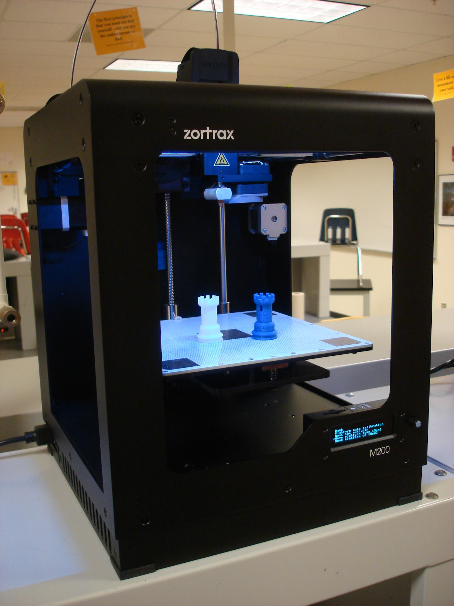

Equipment Inventory

Manufacturer: Zortrax
Model#: M200 (one extruder)
Stock#: n/a
Serial#: Z31235C23 (Model# M200-V04, September 2016)
Acquired: See above (New)
For Students / Users
- Z-Suite Instructions for Generating a .zcode file from an .STL file
- Printing with Octave PLA Filament Instructions
- Printing with PolyFlex Filament Instructions
- M200 Zortrax Printer Instruction Manual
- M Series User Manual
- Z-Temp Temperature Switch Instruction Manual
- Blank Hard Copy of Printer Queues -- all colors for Z-ABS
Videos
Maintenance History
3/3/22: